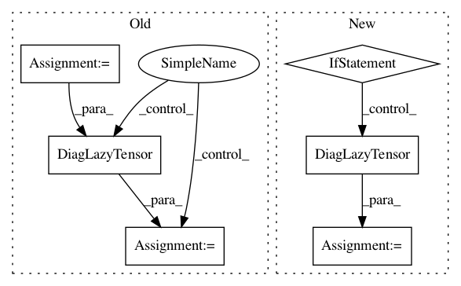

9233f51a05def9f3b2106231f7089295fb205ddc,gpytorch/variational/whitened_variational_strategy.py,WhitenedVariationalStrategy,forward,#WhitenedVariationalStrategy#Any#,67
Before Change
interp_data_data_var = interp_data_data_var_plus_mean_diff_inv_quad[..., :-1]
mean_diff_inv_quad = interp_data_data_var_plus_mean_diff_inv_quad[..., -1]
elif beta_features.diagonal_correction.on():
interp_data_data_var = induc_induc_covar.inv_quad(induc_data_covar, reduce_inv_quad=False)
// Compute predictive mean
predictive_mean = torch.add(
test_mean,
induc_induc_covar.inv_matmul(mean_diff, left_tensor=induc_data_covar.transpose(-1, -2)).squeeze(-1),
)
// Compute the predictive covariance
is_root_lt = isinstance(variational_dist.lazy_covariance_matrix, RootLazyTensor)
is_repeated_root_lt = isinstance(
variational_dist.lazy_covariance_matrix, BatchRepeatLazyTensor
) and isinstance(variational_dist.lazy_covariance_matrix.base_lazy_tensor, RootLazyTensor)
if is_root_lt:
predictive_covar = RootLazyTensor(
induc_data_covar.transpose(-1, -2) @ variational_dist.lazy_covariance_matrix.root.evaluate()
)
elif is_repeated_root_lt:
predictive_covar = RootLazyTensor(
induc_data_covar.transpose(-1, -2)
@ variational_dist.lazy_covariance_matrix.root_decomposition().root.evaluate()
)
else:
predictive_covar = MatmulLazyTensor(
induc_data_covar.transpose(-1, -2), predictive_covar @ induc_data_covar
)
if beta_features.diagonal_correction.on():
diag_correction = (data_data_covar.diag() - interp_data_data_var).clamp(0, math.inf)
predictive_covar = DiagLazyTensor(predictive_covar.diag() + diag_correction)
// Save the logdet, mean_diff_inv_quad, prior distribution for the ELBO
if self.training:
self._memoize_cache["prior_distribution_memo"] = MultivariateNormal(induc_mean, induc_induc_covar)
After Change
induc_data_covar.transpose(-1, -2), predictive_covar @ induc_data_covar
)
if self.training:
data_covariance = DiagLazyTensor((data_data_covar.diag() - interp_data_data_var).clamp(0, math.inf))
else:
neg_induc_data_data_covar = induc_induc_covar.inv_matmul(
induc_data_covar, left_tensor=induc_data_covar.transpose(-1, -2).mul(-1)
)
data_covariance = data_data_covar + neg_induc_data_data_covar
predictive_covar = PsdSumLazyTensor(predictive_covar, data_covariance)
// Save the logdet, mean_diff_inv_quad, prior distribution for the ELBO
if self.training:
self._memoize_cache["prior_distribution_memo"] = MultivariateNormal(induc_mean, induc_induc_covar)
In pattern: SUPERPATTERN
Frequency: 3
Non-data size: 6
Instances
Project Name: cornellius-gp/gpytorch
Commit Name: 9233f51a05def9f3b2106231f7089295fb205ddc
Time: 2019-04-15
Author: gpleiss@gmail.com
File Name: gpytorch/variational/whitened_variational_strategy.py
Class Name: WhitenedVariationalStrategy
Method Name: forward
Project Name: cornellius-gp/gpytorch
Commit Name: 44826d877d755e7df1d681d680583911d6d2032e
Time: 2019-04-15
Author: balandat@fb.com
File Name: gpytorch/variational/whitened_variational_strategy.py
Class Name: WhitenedVariationalStrategy
Method Name: forward
Project Name: cornellius-gp/gpytorch
Commit Name: d278768807dff0c1920795073a219577571959d7
Time: 2020-06-26
Author: wjm363@nyu.edu
File Name: gpytorch/lazy/kronecker_product_added_diag_lazy_tensor.py
Class Name: KroneckerProductAddedDiagLazyTensor
Method Name: inv_quad